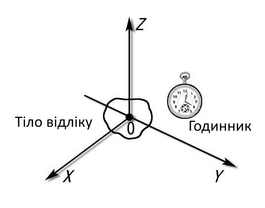
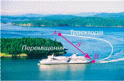

Теоретичний матеріал
Механіка – це розділ фізики, що вивчає механічний рух тіл та зміни які відбуваються при їх взаємодії. Основні розділи механіки – кінематика і динаміка. Механічний рух тіл – це зміна взаємного положення тіл з плином часу. Класична механіка вивчає визначення положення тіла в просторі в будь-який момент часу. Закони механіки визначають причини і принципи руху тіла та його положення в просторі, а також взаємодії тіл. Кінематика – розділ механіки, який вивчає рух тіл, без урахування взаємодії тіл, фізичних причин або сил, що викликають цей рух. Динаміка – це розділ механіки в якому вивчаються причини виникнення механічного руху. Статика – це розділ механіки в якому розглядаються умови рівноваги тіл.
Механічний рух – це зміна положення тіла в просторі відносно інших тіл. Наприклад, автомобіль рухається по дорозі. В автомобілі знаходяться люди. Люди рухаються разом з автомобілем по дорозі. Тобто люди переміщуються в просторі відносно дороги. Але щодо самого автомобіля люди не рухаються. В цьому проявляється відносність механічного руху. Далі коротко розглянемо основні види механічного руху.
У багатьох випадках розміром тіла можна знехтувати, так як розміри тіла малі в порівнянні з відстанню, яку походить це тіло, або порівняно з відстанню між цим тілом та іншими тілами. Таке тіло для спрощення розрахунків умовно можна вважати матеріальною точкою, яка має масу тіла. Матеріальна точка – це тіло, розмірами якого в даних умовах можна знехтувати.
Система відліку Матеріальна точка рухається відносно інших тіл. Тіло, відносно якого розглядається даний механічний рух, називається тілом відліку. Тіло відліку вибирають довільно в залежності від розв’язуваних задач. З тілом відліку зв’язується система координат, яка являє собою точку відліку (початок координат). Система координат має 1, 2 або 3 осі в залежності від умов руху. Положення точки на лінії (1 вісь), площині (2 осі) або у просторі (3 осі) визначають відповідно однією, двома або трьома координатами. Для визначення положення тіла в просторі в будь-який момент часу також необхідно встановити початок відліку часу. Система відліку – це система координат, тіло відліку, з якими пов’язана система координат і прилад для вимірювання часу. Відносно системи відліку і розглядається рух тіла. У одного і того ж тіла відносно різних тіл відліку в різних системах координат можуть бути абсолютно різні координати.
Траєкторія (від пізньолатинського trajectories – стосовний до переміщення) – це лінія, по якій рухається тіло (матеріальна точка). Траєкторія руху може бути прямою (тіло переміщується в одному напрямку) і криволінійною, тобто механічний рух може бути прямолінійним і криволінійним.Траєкторія та переміщення Траєкторія прямолінійного руху у цій системі координат – це пряма лінія. Наприклад, можна вважати, що траєкторія руху автомобіля по рівній дорозі без поворотів є прямолінійною. Криволінійний рух – це рух тіл по колу, еліпсу, параболі або гіперболі. Приклад криволінійного руху – рух точки на колесі рухомого автомобіля або рух автомобіля в повороті. Рух може бути складним. Наприклад, траєкторія руху тіла на початку шляху може бути прямолінійною, потім криволінійною. Наприклад, автомобіль на початку шляху рухається по прямій дорозі, а потім дорога починає “петляти” і автомобіль починає криволінійний рух.
Шлях – це довжина траєкторії. Шлях є скалярною величиною і у міжнародній системі одиниць СІ вимірюється в метрах (м). Розрахунок шляху виконується у багатьох задачах з фізики. Деякі приклади будуть розглянуті далі на нашому сайті. Вектор переміщення Вектор переміщення (або простопереміщення) – це спрямований відрізок прямої, що сполучає початкове положення тіла з його подальшим положенням (рис. 1.1). Переміщення – величина векторна. Вектор переміщення спрямований від початкової точки руху до кінцевої.
Модуль вектора переміщення (тобто довжина відрізка, який з’єднує початкову і кінцеву точки руху) може дорівнювати пройденому шляху або бути менше пройденого шляху. Але ніколи модуль вектора переміщення не може бути більше пройденого шляху. Якщо автомобіль проїде по колу один раз, то вийде, що точка початку руху співпаде з точкою кінця руху і тоді вектор переміщення буде дорівнює нулю, а пройдений шлях дорівнює довжині кола. Таким чином, шлях і переміщення – це два різних поняття.
Швидкість – це кількісна характеристика руху тіла.